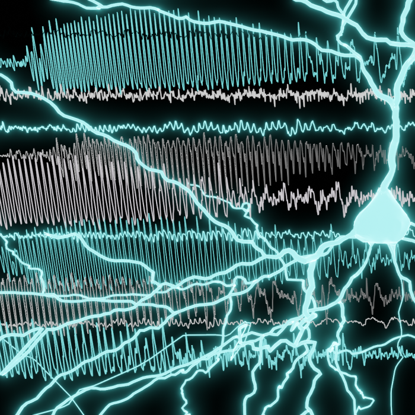
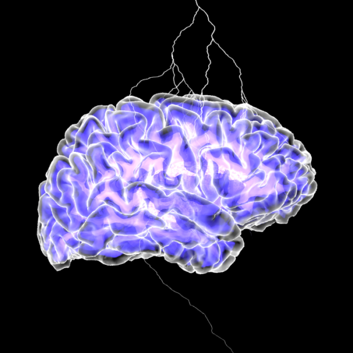

TEAM 01 • EPILEPSY & NEUROMODULATION



Cash, Paulk, Zelmann & Salami Labs
Epilepsy & Neuromodulation
Investigating multi-scale seizure dynamics from microdomain onset to large-scale cortical propagation, paired with single-pulse electrical stimulation (SPES/CCEP) and state-dependent closed-loop neuromodulation to prevent seizures and restore cognitive function.
- How do microscale cellular dynamics transition into macroscale clinical seizures across human cortex and thalamus?
- How can real-time closed-loop intracranial stimulation (CLoSES) reshape network excitability and improve cognitive outcomes?